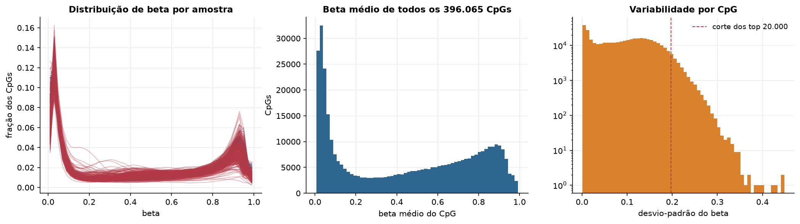
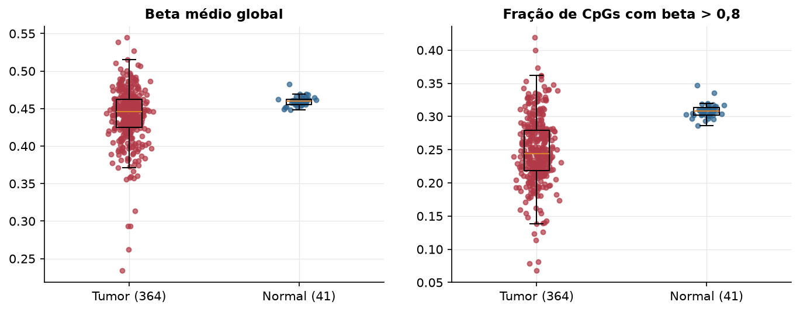
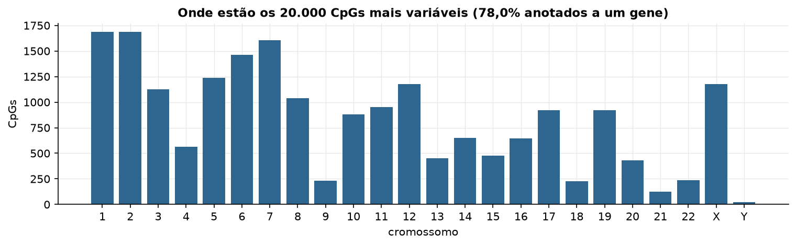
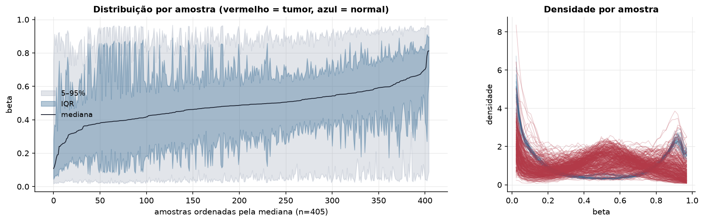
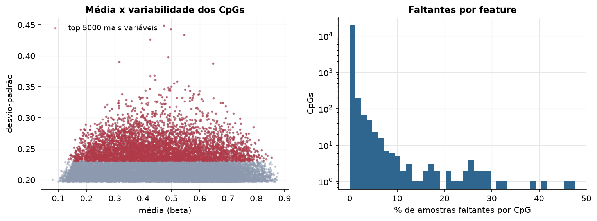
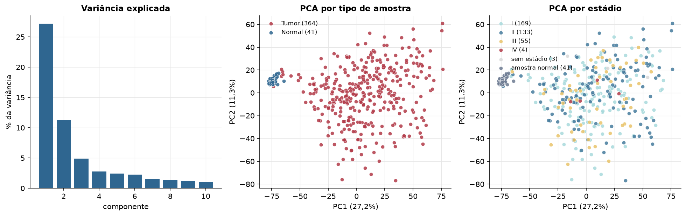
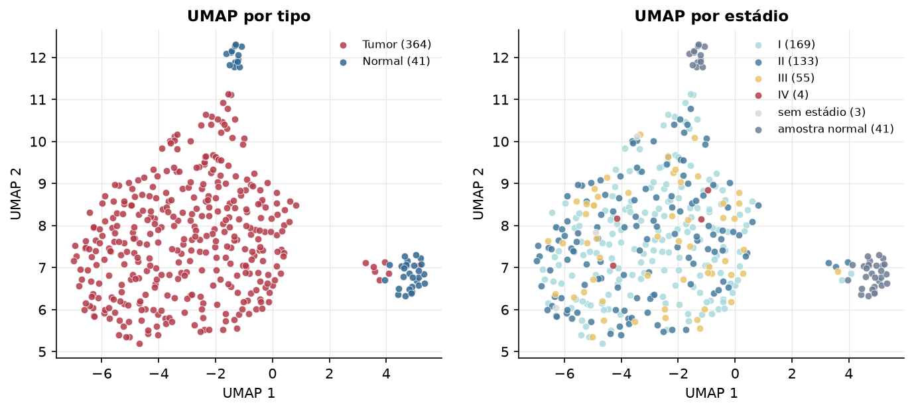
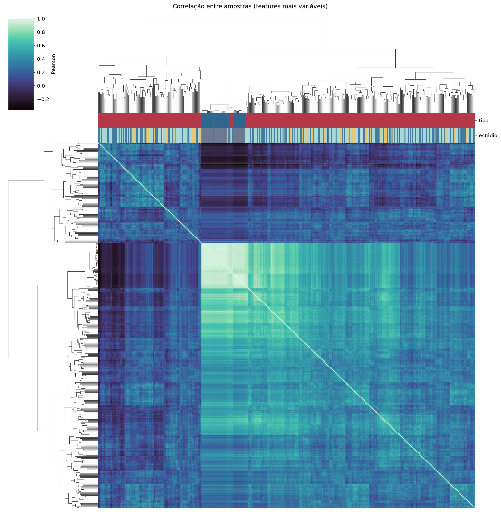
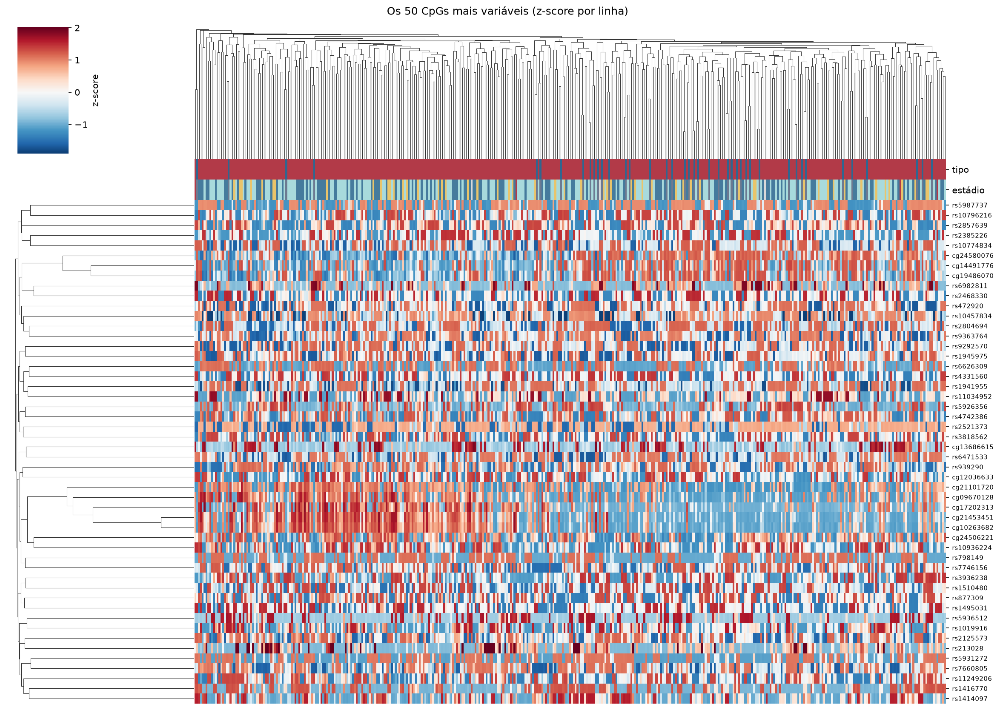
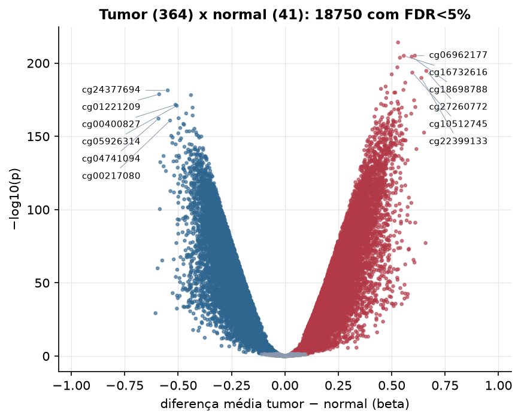

LUSC · Metilação do DNA (450k)
Illumina Infinium HumanMethylation450, valores beta (0 a 1) · gerado em 22/10/2026 01:53
396.065CpGs medidos
381.309CpGs sem faltante
20.000CpGs
364amostras tumorais
41amostras normais
0,1%valores faltantes
Fonte: PanCanAtlas HM450 via API do Xena
O array tem ~485 mil CpGs. Para não ocupar espaço, guardamos estatísticas de todos os CpGs e só os 20.000 mais variáveis para PCA, UMAP e heatmaps.
Principais resultados
- A distribuição de beta é bimodal: a maioria dos CpGs está quase toda desmetilada (perto de 0, típico de ilhas CpG em promotores) ou quase toda metilada (perto de 1, corpo gênico e regiões intergênicas). 42,3% dos CpGs têm beta médio intermediário (0,2 a 0,8).
- Beta médio global: 0,446 nos tumores e 0,460 nos normais (hipometilação global no tumor, como é comum em câncer).
- 20.000 CpGs medidos em 405 amostras (364 tumorais e 41 normais); 0,1% dos valores estão faltando.
- Os dois primeiros componentes principais explicam 27,2% e 11,3% da variância das features mais variáveis.
- Correlação mediana entre amostras: 0,30.
- Tumor x normal: 18750 CpGs diferentes com FDR < 5% (9931 maiores no tumor, 8819 maiores no normal; 39 pacientes têm o par tumor-normal).
- Mais aumentados no tumor: cg22167515, cg06962177, cg16732616, cg18698788, cg07078225, cg20935165, cg27260772, cg10512745.
- Mais reduzidos no tumor: cg24377694, cg01221209, cg05649391, cg00400827, cg05926314, cg14032033, cg17315844, cg18116285.
- Associações clínicas com p < 0,05 nos componentes principais: PC1 com sexo (p=0.024); PC1 com idade (p=0.001); PC3 com sobrevida (p=0.046).
Distribuição global



Exploração dos CpGs mais variáveis
Distribuição dos valores


Estrutura das amostras




Tumor x normal

Features mais diferentes entre tumor e normal
| diferenca_tumor_menos_normal | t | p | fdr | |
|---|---|---|---|---|
| cg22167515 | 0.53 | 64.752 | 7.19e-215 | 1.44e-210 |
| cg06962177 | 0.609 | 74.751 | 7.8e-206 | 6.96e-202 |
| cg16732616 | 0.557 | 69.589 | 1.04e-205 | 6.96e-202 |
| cg18698788 | 0.594 | 63.811 | 3.98e-205 | 1.99e-201 |
| cg07078225 | 0.539 | 61.64 | 2.01e-204 | 8.02e-201 |
| cg20935165 | 0.526 | 58.583 | 7.04e-198 | 2.35e-194 |
| cg27260772 | 0.662 | 57.218 | 2e-195 | 5.71e-192 |
| cg10512745 | 0.597 | 57.315 | 2.87e-194 | 7.18e-191 |
| cg00097146 | 0.5 | 56.314 | 4.68e-193 | 1.04e-189 |
| cg22399133 | 0.639 | 57.438 | 1.25e-190 | 2.5e-187 |
| cg00249511 | 0.564 | 54.906 | 2.3e-187 | 4.18e-184 |
| cg18786873 | 0.471 | 53.629 | 9.37e-185 | 1.56e-181 |
| cg16509851 | 0.45 | 52.857 | 3.65e-183 | 5.62e-180 |
| cg05224741 | 0.555 | 53.295 | 1.87e-182 | 2.66e-179 |
| cg24377694 | -0.549 | -52.977 | 3.75e-182 | 4.99e-179 |
| cg07860213 | 0.517 | 54.506 | 1.25e-180 | 1.5e-177 |
| cg07835424 | 0.512 | 51.931 | 1.28e-180 | 1.5e-177 |
| cg15617155 | 0.479 | 52.748 | 1.43e-180 | 1.59e-177 |
| cg01221209 | -0.589 | -54.609 | 1.71e-179 | 1.8e-176 |
| cg05649391 | -0.44 | -51.355 | 6.46e-179 | 6.46e-176 |
| cg12993163 | 0.474 | 50.781 | 5.97e-177 | 5.69e-174 |
| cg08364561 | 0.605 | 52.906 | 2.21e-175 | 2.01e-172 |
| cg18372607 | 0.527 | 50.961 | 1.89e-174 | 1.65e-171 |
| cg18172877 | 0.498 | 49.573 | 1.37e-173 | 1.14e-170 |
| cg06215569 | 0.45 | 49.372 | 6.75e-173 | 5.4e-170 |
| cg01405040 | 0.531 | 55.295 | 7.3e-173 | 5.62e-170 |
| cg00400827 | -0.512 | -49.147 | 2.66e-172 | 1.97e-169 |
| cg16519587 | 0.463 | 49.965 | 6.07e-172 | 4.33e-169 |
| cg18705773 | 0.473 | 50.997 | 1.04e-171 | 7.14e-169 |
| cg05926314 | -0.506 | -49.01 | 1.19e-171 | 7.94e-169 |
Associação com variáveis clínicas
p-valores da associação dos três primeiros componentes principais (só tumores) com estádio (Kruskal-Wallis), sexo (Mann-Whitney), idade (Spearman) e sobrevida global (Cox univariado).
| estádio (Kruskal) | sexo (Mann-Whitney) | idade (Spearman) | sobrevida OS (Cox) | |
|---|---|---|---|---|
| PC1 (19,5%) | 0.371 | 0.024 | 0.001 | 0.078 |
| PC2 (12,1%) | 0.44 | 0.071 | 0.307 | 0.846 |
| PC3 (5,3%) | 0.074 | 0.26 | 0.128 | 0.046 |